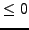
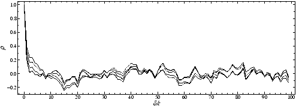

SIGSPEC is able to compute correlograms of the time series for each stage of prewhitening. The correlogram files are named c#iteration#.dat. The calculation of correlograms is activated by the keyword correlograms, which requires three integer parameters. The first parameter represents the maximum order to which to compute serial correlations, i.e. the limit of index lag for each correlogram. Setting it zero forces SIGSPEC to adjust it to half the number of data points in the time series. The second parameter is the maximum number of iterations for which to compute correlograms. If the number of prewhitening iterations exceeds this value, then no correlogram is generated for the iterations after this limit. If a number  is given, then a correlogram is computed for each prewhitening stage. The third parameter has to be a positive number and defines a step width. If it is set 1, a file is generated after each iteration, if it is set 2, after every second iteration (starting with c000002.dat), and so on. The correlogram computation is switched off by default.
A file rescorr.dat is generated, if the keyword correlograms is specified, no matter which parameter constellation is chosen.
A correlogram file consists of two columns referring to
Example. The sample project correlograms illustrates how correlograms are generated with SIGSPEC using the V photometry of IC4996#89 as time series input file correlograms.dat. The file correlograms.ini contains the line
correlograms 100 -1 1
which forces SIGSPEC to evaluate correlograms with a maximum index lag of 100 (first parameter) for all iterations (negative value of second parameter). After each iteration, a correlogram is generated (third parameter). The output files
correlograms/c000000.dat
correlograms/c000001.dat
correlograms/c000002.dat
correlograms/rescorr.dat
are generated as displayed in Fig.18.



Next: Time-resolved Analysis
Up: SigSpec User's Manual by
Previous: Preview
Contents
Piet Reegen
2009-09-23